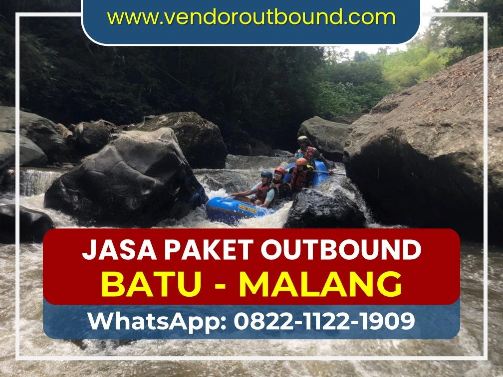
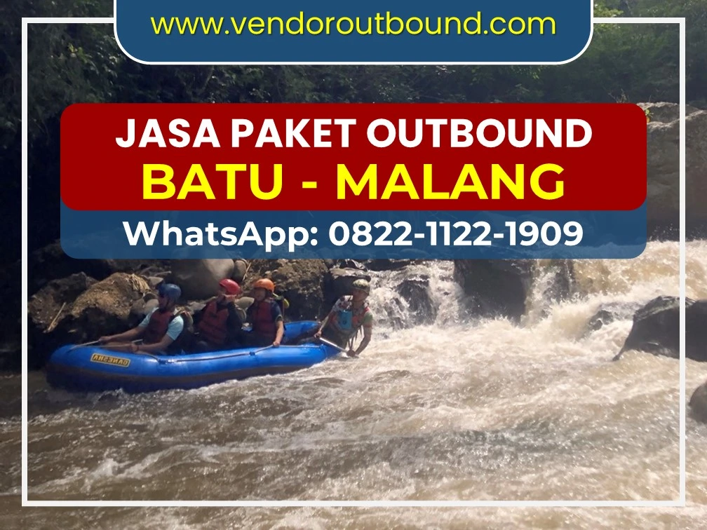
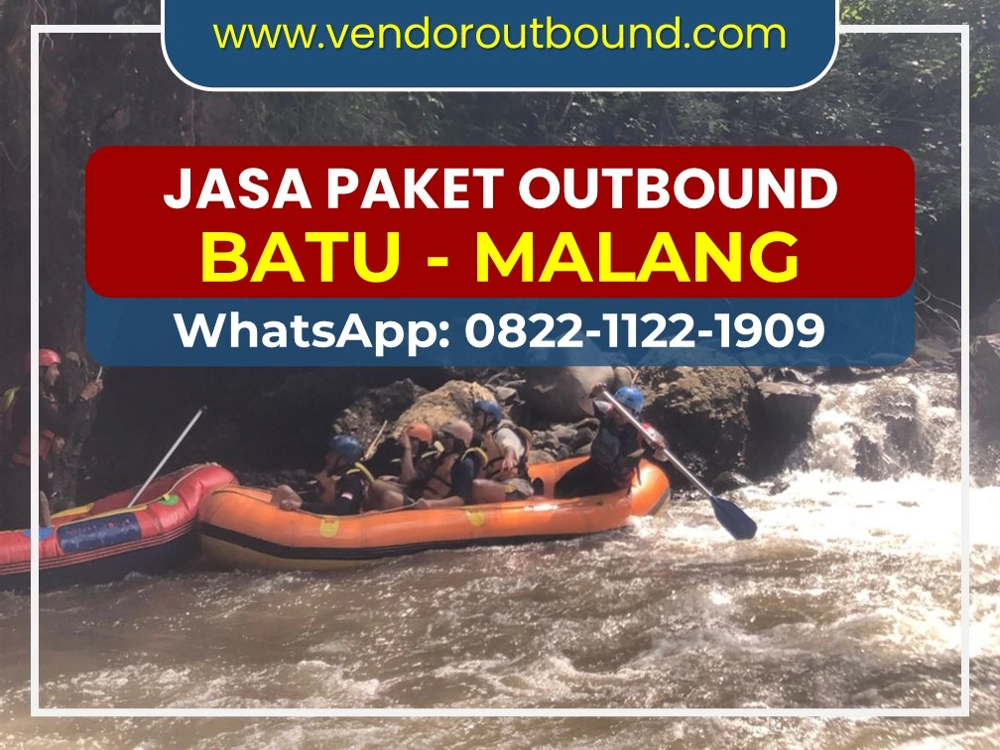

Tempat Rafting Terbaik di Batu Malang: Liburan Seru Memacu Adrenalin Terlengkap 2026

Foto: Keseruan menyusuri sungai dan jeram di lokasi rafting andalan Batu Malang.
Apakah Anda sedang mencari pengalaman wisata yang berbeda, menantang, dan pastinya seru untuk dihabiskan bersama teman-teman, keluarga, atau rekan kerja? Kota wisata Batu dan Malang merupakan jawaban yang tepat. Kedua wilayah ini dikenal tidak hanya karena suhunya yang sejuk dan keindahan panorama pegunungannya, tetapi juga karena suguhan atraksi wisata alamnya yang luar biasa, khususnya arung jeram atau rafting. Banyak sekali orang yang datang ke Jawa Timur khusus untuk mencari tempat rafting terbaik di batu malang.
Sebagai salah satu pelopor kegiatan luar ruang (outdoor activities) dan pusat outbound di Jawa Timur, Batu Malang dikelilingi oleh aliran sungai yang berhulu langsung dari mata air pegunungan. Arus sungainya bervariasi—mulai dari yang cocok untuk pemula dan anak-anak, hingga yang bisa memacu adrenalin tingkat tinggi untuk kalangan profesional. Airnya yang bersih dan dingin, ditambah dengan pemandangan tebing hijau dan persawahan yang asri di sepanjang rute pengarungan, membuat siapapun enggan untuk cepat-cepat pulang.
Daftar Isi Artikel
Mengapa Harus Mengunjungi Tempat Rafting Terbaik di Batu Malang?
Ada berbagai alasan mengapa kawasan Batu dan Malang Raya disebut sebagai surganya destinasi rafting. Pertama, akses transportasinya amat sangat mudah. Kedua, pilihan rute sungainya sangat beragam. Anda bisa memilih panjang durasi mengarungi sungai, mulai dari trek pendek berdurasi 1 jam hingga ekspedisi seru menembus hutan yang butuh waktu lebih dari 2.5 jam.
"Alam adalah guru yang mengajarkan kerjasama, keberanian, dan semangat patah menyerah. Arung jeram tidak hanya tentang olahraga, melainkan tentang membangun kebersamaan dan menguji kekompakan tim di atas satu perahu yang sama." - Jasa Rafting Malang
Lebih hebatnya lagi, mayoritas tempat rafting terbaik di batu malang menawarkan fasilitas penunjang yang sungguh lengkap dan super memanjakan pelanggannya. Mulai dari basecamp yang asri dengan konsep kembali ke alam, tempat bersantai (gazebo), fasilitas kamar mandi yang layak, hidangan makan siang dengan menu tradisional khas pedesaan yang menggugah selera, snack dan minuman hangat di rest area (di tengah pengarungan), hingga jaminan asuransi cover keselamatan bagi tiap-tiap peserta. Selain itu, tenaga pendamping (Guide/Skipper) di setiap perahu sudah dibekali dengan lisensi dan jam terbang tinggi, sehingga mereka tahu persis cara menjalankan SOP keselamatan yang ketat di segala medan.
Promo Spesial Rafting Bulan Ini!

Dapatkan diskon paket grup dengan menghubungi nomor CS.
Rekomendasi 3 Tempat Rafting Terbaik di Batu Malang
Jika sudah yakin memilih Batu Malang sebagai tujuan wisata penantang adrenalin tahun ini, maka Anda harus tahu titik-titik lokasi wisata arung jeram yang terpercaya. Kami telah merangkum daftar 3 besar destinasi terbaik yang sangat layak dipertimbangkan:
1. Kaliwatu Rafting (Bumiaji, Kota Batu)
Lokasi pertama dan paling legendaris yang memegang gelar tempat rafting terbaik di batu malang adalah Kaliwatu Rafting. Terletak tepat di jantung Kota Batu, tepatnya di Kecamatan Bumiaji, tempat ini selalu dipenuhi wisatawan. Kaliwatu sangat direkomendasikan bagi Anda yang lebih dominan berwisata bersama rombongan keluarga atau kelompok pelajar (LDKS).
Sungai Brantas yang dialiri oleh Kaliwatu memiliki debit air yang tergolong stabil sepanjang musim. Tingkat kesulitan atau Grade-nya berada di level 2 hingga 3. Trek sejauh sekitar 7-9 kilometer ini menyuguhkan pengalaman arung jeram seru selama kurang lebih 1,5 hingga 2 jam.

Jeram yang dinamis namun masih terkontrol, sangat direkomendasikan untuk rafting bersama rekan kerja (corporate) maupun pemula.
2. Kasembon Rafting (Kabupaten Malang Barat)
Bergeser agak ke arah barat dari pusat wisata Batu, terdapat destinasi fenomenal lainnya, yaitu Kasembon Rafting. Lokasinya ada di rute antara Batu dan Kediri. Ini adalah pilihan tepat jika Anda menginginkan suasana alam yang lebih liar, alami, dikelilingi pesona sawah membentang serta relief tebing hijau yang rimbun dan memukau mata.
Berbeda dengan sungai Brantas, sungai di Kasembon ini debitnya dikendalikan dari aliran dam, sehingga kapan pun Anda berkunjung (kemarau sekalipun), Anda tetap bisa berarung jeram. Keistimewaan jeram di Kasembon adalah variasi ketinggian bebatuan jatuhnya bisa mencapai 1,5 meter hingga 3 meter. Tak ayal, kesiapan mental akan sangat diuji.
3. Sahabat Air Rafting
Destinasi populer ketiga adalah Sahabat Air. Terletak masih di sabuk aliran Sungai Brantas Kota Batu, Sahabat Air menyasar kalangan rombongan gathering perusahaan dan instansi pemerintah yang biasanya menginginkan perpaduan antara wisata adventure arung jeram dan outbound team building yang komprehensif. Tempatnya terorganisir sangat baik dan memiliki area bersantai yang luas.
Tips Aman Berarung Jeram untuk Pemula
Sebagian besar kecelakaan kecil akibat kelalaian saat berarung jeram dapat dihindari sepenuhnya asalkan kita disiplin menjalankan protokol keselamatan. Berikut adalah beberapa anjuran dari ahli:
- Kenakan Pelampung dan Helm dengan Benar: Pastikan semuanya terikat kuat dan tidak longgar. Pelampung standar akan mengangkat beban Anda bahkan jika Anda tidak pernah bisa berenang sekalipun.
- Ikuti Komando Skipper: Jika guide Anda (skipper) berteriak "Boom!" Anda harus langsung jongkok dan menunduk ke dalam perahu untuk menghindari cabang pohon di sungai atau benturan ekstrem di jeram.
- Kenakan Sandal Gunung: Dilarang keras menggunakan sandal jepit biasa yang mudah lepas. Kaki perlindungan agar tidak tergores batuan sungai sangat diperlukan.
- Jangan Panik Jika Terjatuh: Biarkan arus membawa tubuh Anda yang sudah didukung pelampung standar, menghadap dan berbaring terlentang dengan posisi kaki mengarah ke hilir sungai (untuk menahan benturan batu), sampai tim penyelamat melempar tali (throw bag).
FAQs (Pertanyaan Paling Sering Diajukan)
Kesimpulan Akhir
Tidak berlebihan rasanya menyebut bahwa mencari opsi tempat rafting terbaik di batu malang adalah prioritas bagi mereka yang ingin menajamkan rasa kebersamaan rombongan wisata. Tidak hanya sebatas memacu keberanian menyusuri arus yang kencang, fasilitas pendukungnya yang sangat apik dan bergaransi menjadi asuransi ketenangan berlibur. Dari Kaliwatu, Kasembon hingga vendor populer lainnya, setiap jeram memberikan kenangan dan tawa lepas bagi setiap tim perusahaan atau rukun warga yang bertandang ke kota berhawa dingin ini. Oleh sebab itu, jangan tunda lagi! Segera amankan jadwal liburan petualangan memukau Anda dengan berkoordinasi bersama event organizer provider terpercaya secepat mungkin.
Syahnan
Web Developer bersertifikasi spesialis Optimasi SEO dan Pakar Wisata Petualangan Jawa Timur. Berpengalaman membimbing ribuan jam program outdoor team building dan mengulas seluk-beluk spot wisata tersembunyi ber-Google PageSpeed tinggi. Hubungi di WA jika butuh konsultasi!